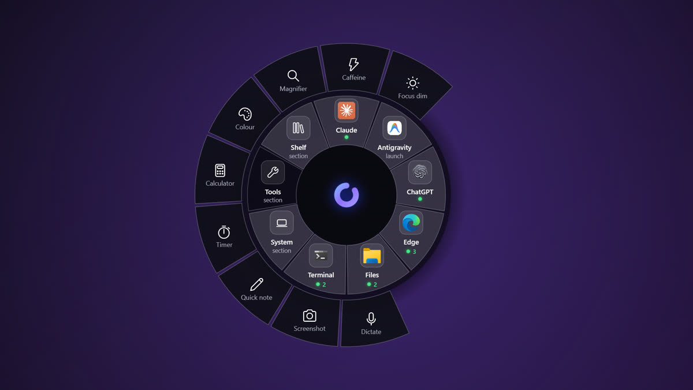
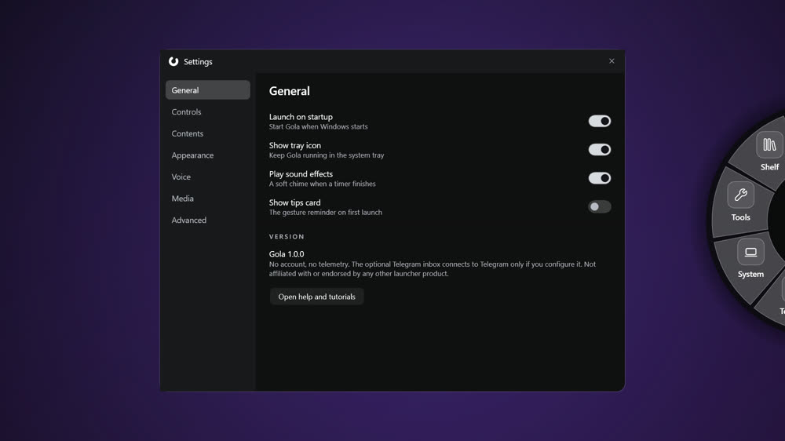
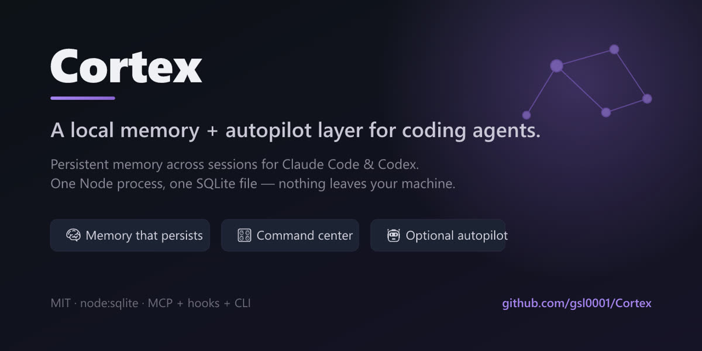
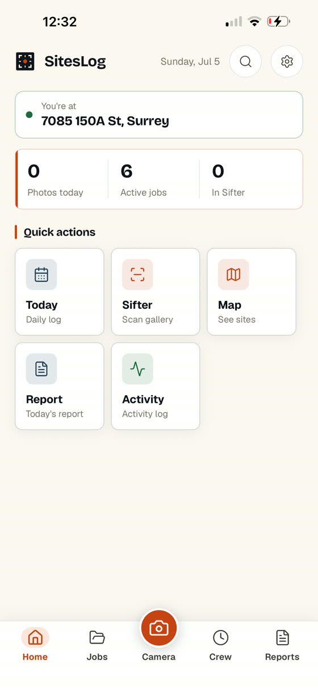
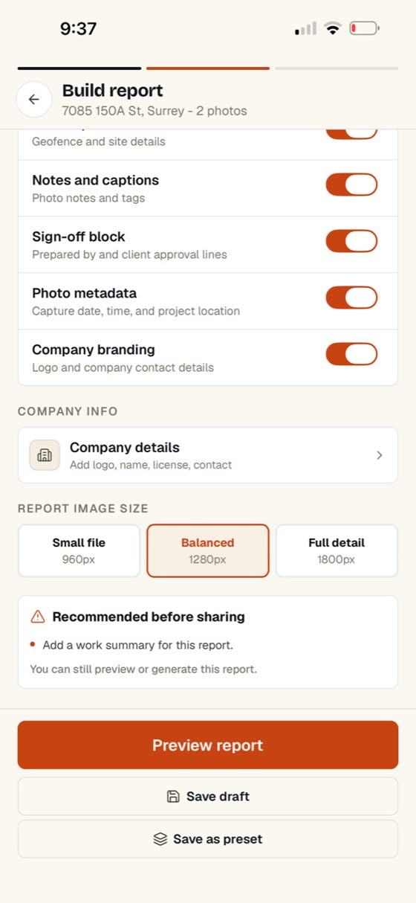
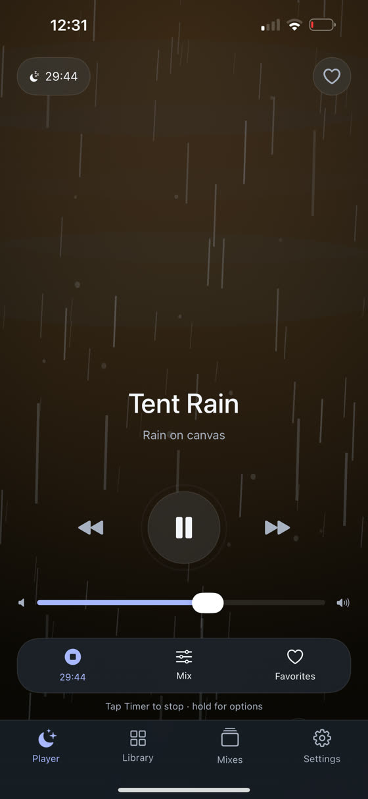
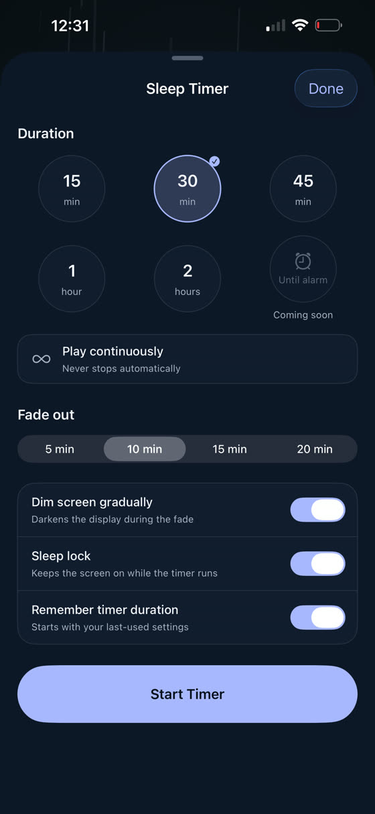

Windows app
Gola
A radial launcher. Hold the hotkey, flick toward what you want, let go — apps, folders, open windows, and a Tools ring with a magnifier, timer, colour picker, calculator and quick note. Sections fan out from the wheel, so nothing is more than one flick deep.

Developer tool · open source
Cortex
Memory for coding agents. Claude Code and Codex hand off to each other and to their future selves through one Node process and one SQLite file — no cloud, nothing leaving the machine. Ships with MCP tools, hooks, a CLI, and an optional autopilot that works a task queue on its own.


Mobile app
SitesLog
Jobsite photo reports for contractors. It sorts work photos by the site they were taken at, then turns a day's worth into a PDF, HTML or CSV report you can send to the client — without the weight of full construction software.


iOS app
Moonrain
A sleep aid built around the part everyone actually uses: the timer. Pick a sound, set a fade-out, let the screen dim itself. Mixes, favourites and Siri shortcuts for the rest.
Also running
Tracket
Session continuity for people pairing with coding agents: a Markdown-native roadmap plus a live dashboard, so the next session starts where the last one stopped.
Trading systems
Automated SPY options systems — vertical spreads and consecutive-day setups, fail-closed by default, backtested before anything reaches a live broker. Private repositories.